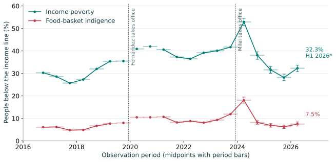
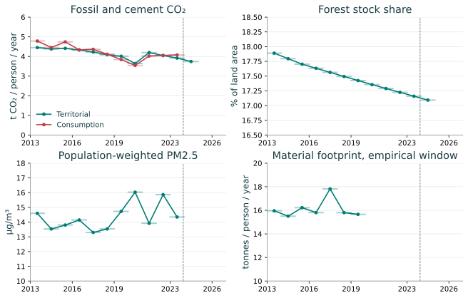

Research working paper • Evidence cut-off 29 October 2026
Argentina before and after December 2023
A partial longitudinal Doughnut, social outcomes, ecological accounts and the limits of policy attribution
Abstract
Argentina’s record around the December 2023 change of administration is mixed across outcomes and sensitive to the comparison period. During 2013–2023, life expectancy, child survival and internet use improved, while real GDP per person was lower at the endpoint and forest cover continued declining. The comparable urban monetary-poverty series does not cover the full decade: the official publication gap prevents an honest 2013-to-2023 comparison. After the inauguration, poverty first rose sharply, then fell substantially, and increased again in the latest semester. Some national ecological accounts extend only to 2023, leaving little or no fully post-inauguration evidence. A partial social Doughnut makes four published benchmarks visible without manufacturing missing dimensions or assigning Argentina an unsupported planetary quota.
Working scope. “Rightward shift” is operationalized provisionally as Javier Milei’s inauguration on 10 December 2023, with Mauricio Macri’s 2015 inauguration marked separately. The paper covers the decade 2013–2023 and all eligible released observations since. This is a temporal description, not a test of an ideological proposition.
1. What a longitudinal country portrait can establish
The Doughnut framework asks whether social needs can be met within ecological limits. It does not turn GDP into a comprehensive welfare measure or make a change of government a causal experiment. Fanning and colleagues developed national historical comparisons, whereas Fanning and Raworth’s later global monitor uses a different indicator system and scale. The present paper uses four fixed social benchmarks from the earlier national work and publishes additional outcomes in their original units. It does not relabel global 2000–2022 indicators as Argentina’s national history. Fanning et al. (Table 1 and Methods); Fanning and Raworth (2025) (national environmental footprints concern the 2017 comparison).
The retained benchmarks are life expectancy of 74 years, electricity access of 95%, employment of 94% of the labour force, and equality of 70 points on a scale defined as 100 minus the Gini index. They are published analytical choices, not Argentine legal commitments. Equality is an urban income-survey measure: the World Bank identifies the relevant survey as EPHC-S2 and the reporting coverage as urban. A country-level portrait therefore has mixed geographic coverage, which must remain visible. World Bank PIP survey metadata.

2. The preceding decade: progress in capabilities, persistent economic and ecological pressures
| Indicator / native unit | 2013 | 2023 | 2024 | 2025 |
|---|---|---|---|---|
| Life expectancy at birthyears | 75.83 | 77.39 | 77.54 | — |
| Under-five mortalitydeaths per 1,000 live births | 12.70 | 9.70 | 9.50 | — |
| Access to electricity% | 99.30 | 100.00 | 98.40 | — |
| Individuals using the Internet% | 59.90 | 89.23 | 89.67 | — |
| Unemployment, ILO modelled estimate% | 7.10 | 6.14 | 7.15 | 7.14 |
| Gini index, urban second-semester surveypoints (0–100) | 41.10 | 42.40 | 42.40 | — |
| Real GDP per capitaconstant 2015 US$ | 13,946.10 | 12,993.09 | 12,774.35 | 13,287.12 |
— means no eligible observation, not zero. Gini/equality are H2 urban surveys. Other rows are calendar-year estimates. See the data appendix for exact precision, periods and geography.
Life expectancy increased from 75.829 years in 2013 to 77.395 in 2023, a gain of 1.566 years. Under-five mortality declined from 12.7 to 9.7 deaths per 1,000 live births. Internet use rose from 59.90% to 89.23%, an increase of 29.33 percentage points. These are substantial improvements on their respective measures, although internet use does not establish affordability or service quality, and electricity connection does not establish reliable or affordable energy. WDI life expectancy; WDI child mortality; WDI/ITU internet use.
The decade was not a uniform trend. Life expectancy fell to 73.948 years in 2021 before recovering. Real GDP per capita in constant 2015 US dollars declined from $13,946.10 in 2013 to $12,993.09 in 2023, a 6.83% endpoint decline. ILO-modelled unemployment was 7.10% in 2013, 9.843% in 2019 and 6.139% in 2023. These annual estimates do not describe informal work, hours, labour-force exits or the distribution of earnings. WDI life expectancy; WDI real GDP per capita; ILO-modelled unemployment via WDI.
Urban Gini inequality was 41.1 in the 2013 reference survey and 42.4 in the 2023 reference survey. There is no 2015 value in this WDI series. INDEC warns that statistics from the 2007–2015 period require reservations unless explicitly revised, and the post-2016 recovery of statistical production is a substantive break in the evidence base. These facts limit a precise account of the decade; they do not justify substituting guessed poverty values. WDI Gini series; INDEC historical and methodological notice.
3. Poverty since the administration change: all available semesters
INDEC’s comparable half-year poverty table begins in H2 2016. The survey covers 31 urban agglomerations, rather than every resident of Argentina. Household-income poverty and food-basket indigence use the income and composition of households relative to regional baskets; they are not multidimensional deprivation measures. H2 2023 includes most of the outgoing administration and 21 days of the incoming one. It is an end-2023 reference period rather than a clean untreated baseline. INDEC poverty methods; INDEC historical tables (Cuadro 1).
| Observation period | Poverty, people (%) | Indigence, people (%) |
|---|---|---|
| 2023 H1 | 40.1 | 9.3 |
| 2023 H2 | 41.7 | 11.9 |
| 2024 H1 | 52.9 | 18.1 |
| 2024 H2 | 38.1 | 8.2 |
| 2025 H1 | 31.6 | 6.9 |
| 2025 H2 | 28.2 | 6.3 |
| 2026 H1 (provisional) | 32.3 | 7.5 |
Source: INDEC historical workbook (Cuadro 1, people rows 7 and 11). Latest confidence intervals: INDEC H1 2026 technical report (printed p.5, Table 1).
Relative to H2 2023, H1 2024 poverty rose by 11.2 percentage points, from 41.7% to 52.9%. The subsequent decline reached 28.2% in H2 2025, followed by an increase to 32.3% in H1 2026. Thus, the latest result is 9.4 points below the end-2023 reference, 20.6 points below the H1 2024 peak, and 4.1 points above H2 2025. A season-matched comparison gives 32.3% in H1 2026 versus 40.1% in H1 2023, a decline of 7.8 points. Indigence follows the same broad sequence, from 11.9% in H2 2023 through 18.1%, 8.2%, 6.9%, 6.3% and finally 7.5%.
The latest year-on-year point estimate, 32.3% versus 31.6% in H1 2025, must not be narrated as a statistically established deterioration. INDEC explicitly reports no significant change from the same semester of the preceding year. The 90% confidence intervals for poverty are 30.8–33.7% in H1 2026 and 30.1–33.1% in H1 2025. The within-year increase from H2 2025 is nevertheless part of the published trajectory and cannot be omitted. Confidence-interval overlap alone is not a substitute for the producer’s design-based change test. INDEC H1 2026 report (printed pp.4–5).
The burden remains uneven: 44.5% of children aged 0–14 were in households below the income poverty line in H1 2026. The report also describes household incomes and regional food and total baskets growing at different rates over the semester. Those accounting relationships explain how the poverty statistic is constructed; this paper does not identify the independent causal contribution of each policy, wage change or price shock. INDEC H1 2026 report (printed p.4 and Table 3.2).

4. Stabilization context and remaining social limitations
National December-to-December inflation was 211.4% in 2023, 117.8% in 2024 and 31.5% in 2025. The latest month in the archive, September 2026, recorded 1.9% month-on-month inflation and 33.4% year-on-year inflation. These are three different comparison concepts. Falling inflation means slower price increases, not the reversal of the earlier price level. The national CPI series has a December 2016 base; incompatible earlier regional and national-urban indexes are not chained into a fabricated 2013 national history. INDEC national CPI workbook (national monthly, interannual and index sheets); September 2026 CPI report (summary p.3; released 13 October 2026).
Real GDP per capita declined a further 1.68% in 2024 relative to 2023, then rose to $13,287.12 in 2025. That latest estimate remains 4.73% below 2013. ILO-modelled unemployment was 7.15% in 2024 and 7.145% in 2025, above the 2023 estimate. Urban Gini remained 42.4 at the published one-decimal precision in both 2023 and 2024. None of these outcomes can be inferred from inflation alone. WDI real GDP per capita; ILO-modelled unemployment; WDI Gini.
Electricity access in the retrieved WDI vintage falls from 100% in 2023 to 98.4% in 2024. The observation is retained, even though both years exceed the selected 95% benchmark. Without a source-level revision and measurement investigation, this paper cannot decide whether the change mainly reflects a substantive change in access, estimation, or input coverage. Deleting an inconvenient value would be equally unjustified. Basic drinking-water and sanitation series in the archived WDI response end in 2016; they provide no current post-2023 assessment. WDI electricity access; WDI basic water; WDI basic sanitation.
5. Ecological outcomes: accounting matters, and so do publication lags
| Indicator / native unit | 2013 | 2023 | 2024 | 2025 |
|---|---|---|---|---|
| Territorial fossil and cement CO₂Mt CO₂ per year | 189.52 | 178.41 | 171.06 | — |
| Territorial fossil and cement CO₂ per persont CO₂ per person per year | 4.45 | 3.92 | 3.74 | — |
| Consumption-based fossil and cement CO₂Mt CO₂ per year | 203.75 | 185.67 | — | — |
| Consumption-based fossil and cement CO₂ per persont CO₂ per person per year | 4.78 | 4.08 | — | — |
| Forest area as share of land% of land area | 17.89 | 17.16 | 17.09 | — |
| PM2.5 mean annual population-weighted exposureµg/m³ | 14.60 | 14.35 | — | — |
| Renewables in total final energy consumption% of total final energy | 8.90 | — | — | — |
| Freshwater withdrawal relative to available resources% of available freshwater resources | 10.46 | — | — | — |
| Material footprint per persontonnes per person per year | 15.96 | — | — | — |
— means no eligible observation, not zero. Rows are calendar-year estimates. See the data appendix for exact precision, periods and geography.
In the archived preliminary Global Carbon Budget 2025 publisher-site workbook, territorial fossil and cement CO₂ falls from 189.52 Mt in 2013 to 178.41 Mt in 2023, a 5.87% decline, and to 171.06 Mt in 2024, a further 4.12% decline. Derived per-person values fall from 4.451 to 3.918 to 3.743 tonnes, using the same retrieved WDI population vintage. The difference between total and per-person change is material: the 2013–2023 per-person decline is 11.98%. These accounts exclude land-use-change CO₂ and other greenhouse gases. Global Carbon Budget 2025 national workbook (Territorial Emissions, Argentina column I, rows 176–187; MtC multiplied by 3.664); WDI population denominator.
Consumption-account fossil CO₂, which reallocates trade-embodied emissions, declines from 203.75 Mt in 2013 to 185.67 Mt in 2023. It is higher than territorial emissions in 2023. This accessed preliminary workbook contains no Argentina consumption observation for 2024; that is a limitation of this retrieved vintage, not a claim that no later producer release exists. Consequently, this archived record cannot establish whether the first full year after the inauguration reduced Argentina’s consumption footprint, even though territorial fossil CO₂ declined. The same limitation blocks a claim about an overall national greenhouse-gas footprint. GCB national workbook (Consumption Emissions, Argentina column I, rows 33–44).
Forest area declines from 17.889% of land in 2013 to 17.158% in 2023 and 17.093% in 2024. This is a forest-stock estimate, not a measure of intact biodiversity or of native-forest loss alone. Modelled PM2.5 exposure is 14.60 µg/m³ in 2013 and 14.35 in 2023, with no post-2023 observation in the archive. Renewable energy’s share of total final energy consumption reaches only to 2021 in this WDI series, while the national water-stress series reaches 2022 and repeats the same value, 10.4567%, throughout 2013–2022. Repeated national values do not establish unchanged seasonal or local hydrological conditions. FAO forest area via WDI; WDI PM2.5 exposure; Renewables via WDI; FAO water stress via WDI.
UNEP’s material footprint accounts add an especially consequential limitation. The portal exports values through 2024, but its linked technical annex states that projected components enter from 2020 and that 2019 is the last year suitable for statistical correlation analysis. This archive therefore retains 2020–2024 values as separately labelled source model outputs, not as measured post-Milei outcomes. For the eligible 2013–2019 window, the modelled material footprint is 15.9583 to 15.6574 tonnes per person. Material footprint accounts for upstream extraction associated with final demand; domestic material consumption is a different territorial trade balance. Neither is converted into a fabricated current national planetary boundary. UNEP IRP Argentina export; UNEP technical annex (2024) (printed p.6 and pp.34–35).

6. Chronology is necessary context, not causal identification
Macri took office in December 2015; an IMF Stand-By Arrangement was approved in June 2018; Alberto Fernández took office in December 2019. The evidence window also includes COVID-19 restrictions and a severe drought documented by the national meteorological service in February 2023. These events span different administrations and plausibly affect economic and social outcomes, but the present data do not isolate their contributions. Official presidential roster; BCRA agreement history; Decree 297/2020; SMN February 2023 drought bulletin record.
Milei took office on 10 December 2023. BCRA’s new monetary and exchange framework followed on 12 December, with an announced official exchange rate of 800 pesos per US dollar. Decree 70/2023 was published on 21 December and Law 27,742 on 8 July 2024. Publication dates are kept distinct from the start of an administration and from any subsequent implementation or judicial modification. The timeline marks these events; it does not assign the entire observed change to them or assume that every provision remained in force. Chamber of Deputies inauguration record; BCRA framework announcement; Official Decree 70/2023 archive; Official Law 27,742 text.
The selected chronology also extends beyond the initial reforms. BCRA announced exchange liberalization and a floating-band regime on 11 April 2025, the same date recorded for a new IMF Extended Fund Facility agreement. A 15 December 2025 BCRA announcement set out changes for 2026; the exchange-band regime description confirms an inflation-linked adjustment rule from 1 January 2026. These source documents establish dated policy changes, not a quantitative attribution of the 2026 poverty result. The event list is selected context, not an exhaustive inventory of all laws, transfers or fiscal measures. BCRA Phase 3 announcement; BCRA agreement history; BCRA 2026 programme announcement; BCRA exchange-band regime.
7. Interpretation and a bounded conclusion
The data support three distinct statements. First, the pre-2024 decade contained improvements in several capabilities alongside persistent poverty, lower real GDP per person at the endpoints and ecological pressure. Second, the post-inauguration social record includes both the initial poverty spike and a large subsequent decline, with a latest-semester reversal that remains below the end-2023 reference. Third, the environmental evidence is too incomplete and lagged to conclude that Argentina has moved inside a full national Doughnut under the new administration. Territorial emissions and forest cover also move in different directions on the available estimates.
The four-sector benchmark view is deliberately partial. Life expectancy and electricity meet their selected thresholds in 2013, 2023 and 2024; equality falls short in all three; employment falls slightly short in all three and more so in 2024 than 2023. Life expectancy briefly falls below 74 during 2021. These classifications do not mean that energy deprivation disappeared, that income distribution is adequate outside the sampled urban areas, or that all unmeasured social foundations have been achieved. A useful policy assessment should retain each outcome and each missing dimension, rather than declare a winner from one selected endpoint.
Appendix: published historical reference, kept separate
Fanning et al.’s archived Argentina historical sheets report ecological ratios above one for all six retained biophysical indicators in 2013 and 2015. The 2015 ratios are 1.84 for cumulative carbon, 7.47 for phosphorus, 8.10 for nitrogen, 1.78 for land-system pressure, 2.16 for ecological footprint and 2.12 for material footprint. These are publication-specific, normalized estimates, not the modern native-unit series above. Some source “historical” values already use projected or repeated inputs: nitrogen after 2010 and elements of HANPP require explicit caution. The original 2016–2050 BAU sheets are not imported as observations. Published supplementary workbook (Biophysical_Historical, Argentina 2015); Original supplementary methods (nutrient projections and HANPP carry-forward).
Reproducibility files: main bundle, endpoint audit, separate historical reference, separate projection-contaminated material outputs, and source hashes and exact URLs. The companion methods paper describes admissibility, normalization and the limitations of policy inference.